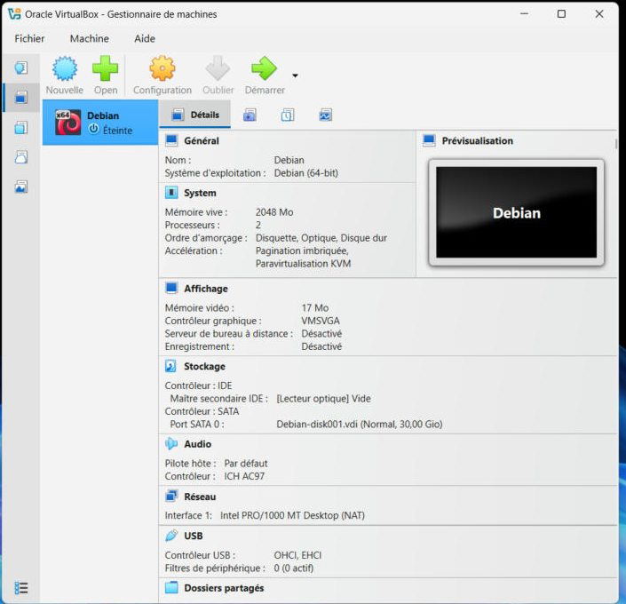
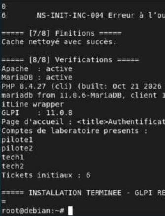
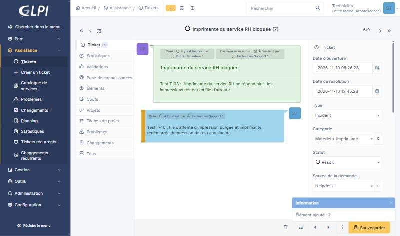
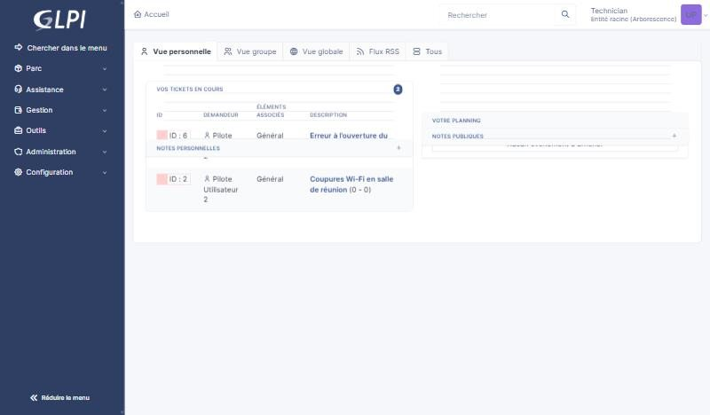
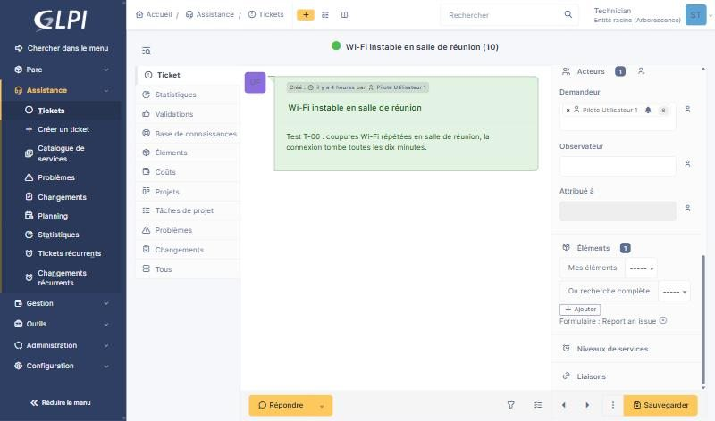
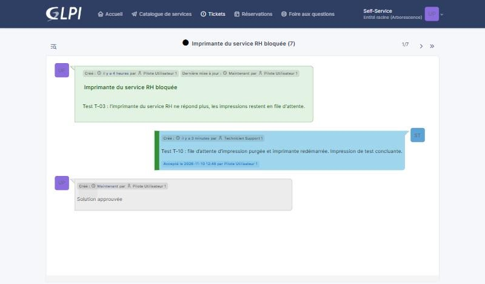

01Contexte et objectifs
NovaServices (entreprise fictive d'environ 120 collaborateurs) gère son support par téléphone, e-mail, messagerie ou en direct. Avec la hausse du volume, cela produit quatre dysfonctionnements :
- des demandes oubliées ou traitées deux fois ;
- aucune visibilité pour l'utilisateur sur l'avancement de sa demande ;
- une priorisation difficile des urgences ;
- aucun historique fiable des interventions.
La direction choisit GLPI comme point de contact unique (centre de services, au sens ITIL). L'enjeu n'est pas l'installation du logiciel, mais une mise en service maîtrisée et adoptée par les utilisateurs.
02Environnement de recette
| Virtualisation | VirtualBox, VM Debian 13 (2 vCPU, 2 Go, 30 Go), NAT 127.0.0.1:8080 → 80 |
| Pile logicielle | Apache 2, PHP 8.4.27, MariaDB 11.8.6 |
| Application | GLPI 11.0.8, base glpi_rec |
| Comptes de test | pilote1, pilote2 (Self-Service) · tech1, tech2 (Technicien) |


03Étapes de réalisation
- Script d'installation idempotent
L'instance de recette est construite par un script Bash en 8 étapes. Chaque étape vérifie l'existant : on peut relancer le script sans risque. Le mot de passe de la base est généré aléatoirement et stocké dans un fichier lisible par root uniquement : il n'apparaît jamais dans le script.
Bash · install_glpi_rec.sh (extrait)LOG=/root/install_glpi_rec.log exec > >(tee -a "$LOG") 2>&1 set -e step() { echo; echo "===== [$1] $2 ====="; } trap 'echo "##### ECHEC - voir le journal $LOG #####"' ERR step 4/8 "Creation de la base de donnees" if [ ! -f "$CRED" ]; then DBPASS=$(openssl rand -hex 12) # mot de passe aléatoire printf 'base=%s\nutilisateur=%s\nmot_de_passe=%s\n' "$DB" "$DBUSER" "$DBPASS" > "$CRED" chmod 600 "$CRED" # lisible par root uniquement else DBPASS=$(sed -n 's/^mot_de_passe=//p' "$CRED") fi step 5/8 "Installation de GLPI en ligne de commande" if [ -f /var/www/glpi/config/config_db.php ]; then echo "GLPI deja installe : etape ignoree." else runuser -u www-data -- php bin/console db:install \ -H localhost -d "$DB" -u "$DBUSER" -p "$DBPASS" -L fr_FR --no-interaction fi step 7/8 "Finitions" rm -f /var/www/glpi/install/install.php # suppression de l'installeur web - Import du jeu de données NovaServices
Comptes pilotes et techniciens, groupes de support, 7 catégories (Compte, Logiciel, Matériel, Réseau…) et 6 tickets initiaux importés par script SQL.
- Campagne de 13 tests d'intégration et 3 scénarios d'acceptation
Chaque test est tracé dans un journal de recette, avec une capture à l'appui : portail Self-Service, création de tickets, pièces jointes, échanges utilisateur/technicien, résolution, approbation de la solution, cas d'erreur.
T-01Portail Self-Service de pilote1 : accès aux pages d'administration refusé (403). 
T-10Solution ajoutée par tech1 : le ticket passe en « Résolu ». - Stratégie de déploiement
Trois stratégies comparées au regard des risques identifiés en recette :
Stratégie Point fort Limite pour NovaServices Décision Big Bang Transition courte Impact global en cas d'erreur de droits ; pic de charge sur une petite équipe Écartée Progressif par vagues Risque étalé, corrections entre deux vagues Coexistence temporaire de l'ancien et du nouveau canal Retenue Blue-Green Bascule et retour rapides Aucune ancienne version à conserver ; coût d'un second environnement Écartée Une erreur d'habilitation non détectée ne touche alors qu'une dizaine d'utilisateurs pilotes : elle est corrigée et retestée avant l'ouverture de la vague suivante.
04Anomalies et traitement
La recette a révélé cinq anomalies, chacune qualifiée par sa criticité et associée à un traitement proposé :
| ID | Constat | Criticité | Traitement proposé |
|---|---|---|---|
| A-01 | pilote2 a le profil Technicien : il lit les tickets de ses collègues et accède à l'administration (T-12) | Bloquante | Corriger le profil et l'habilitation, rejouer T-12 et T-02 |
| A-02 | Aucun groupe affecté automatiquement aux nouveaux tickets (T-06) | Majeure | Créer les règles d'affectation par catégorie (ex. Réseau → Support Réseau) |
| A-03 | Catégorie « Compte > Accès applicatif » absente du formulaire (T-04) | Mineure | Rendre la catégorie visible dans l'interface simplifiée |
| A-04 | Libellés du portail restés en anglais | Mineure | Compléter la traduction |
| A-05 | Horodatage décalé d'une heure (fuseau non configuré) | Mineure | Régler le fuseau de PHP et de GLPI avant la production |


05Résultat
Le procès-verbal de recette conclut « Refusé en l'état » à cause de l'anomalie bloquante A-01, avec la liste des réserves à lever avant une nouvelle recette partielle. Refuser une mise en production sur des preuves, plutôt que de valider par défaut, est une conclusion assumée de la recette.

06Compétences du référentiel mobilisées
- B1.1Gérer le patrimoine informatiqueMettre en place et vérifier les niveaux d'habilitation associés à un service (profils Self-Service / Technicien)
- B1.2Répondre aux incidents et aux demandesCollecter, suivre et orienter des demandes · Traiter des demandes concernant les applications
- B1.4Travailler en mode projetAnalyser les objectifs et l'organisation d'un projet · Planifier les vagues de déploiement
- B1.5Mettre à disposition un service informatiqueRéaliser les tests d'intégration et d'acceptation · Déployer un service · Accompagner les utilisateurs